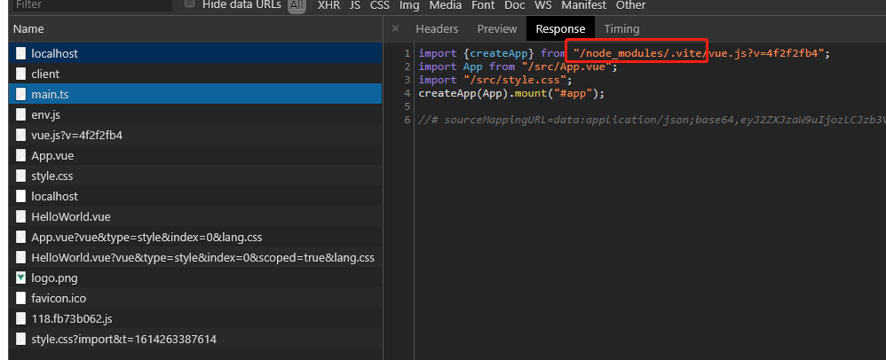

001-vite入门
vite是构建工具，开发周期它利用浏览器支持es module的特性，生产打包利用rollup打包
1、初始化
初始化项目
npm init @vitejs/app
会出现选择界面
也可以直接执行:
# npm 6.x
npm init @vitejs/app my-vue-app --template vue
# npm 7+, extra double-dash is needed:
npm init @vitejs/app my-vue-app -- --template vue
--template支持的有以下配置:
- vanilla
- vue
- vue-ts
- react
- react-ts
- preact
- preact-ts
- lit-element
- lit-element-ts
2、vite利用浏览器原生支持esModule的特点
在/public/index.html中可以看到是这么引入js
<script type="module" src="/src/main.ts"></script>
type="module"是告诉浏览器这是esModule模块，接着浏览器就会用esModule的去解析main.ts
main.ts的内容如下:
import { createApp } from 'vue';
import App from './App.vue'
import './style.css'
createApp(App).mount('#app')
那么，
- 对于
import { createApp } from 'vue'，这种第3方包的，浏览器怎么知道这些vue是要去node_module里面找 - 对于
import App from './App.vue'，这是相对路径，浏览器知道在哪儿，但是这是.vue后缀的，浏览器怎么知道如何解析 - 对于
import './style.css'，浏览器也能找到文件，但是浏览器怎么解析，等我们用了scss等，浏览器又怎么解析
像上面这些问题，就是vite所解决的
我们启动项目，到浏览器看运行过程，关注netWork网络加载的地方

从上面可以看到main.ts中的'vue'已经变成了"/node_modules/.vite/vue.js?v=4f2f2fb4"
说明vite会对node_module的包稍作修改，作为绝对路径加载，从而加载vue.js
3、资源加载可以用绝对路径
资源路径可以用绝对路径的方式加载
比如加载图片<img src="/src/assets/logo.png" alt="">这样就会